HIST 270 · History of China · Chapter 14 · Lecture 2
Two Frontiers
The Ming Closed the Sea and the Steppe, and Silver Came In Anyway
1405–1600 · Study Buddy edition
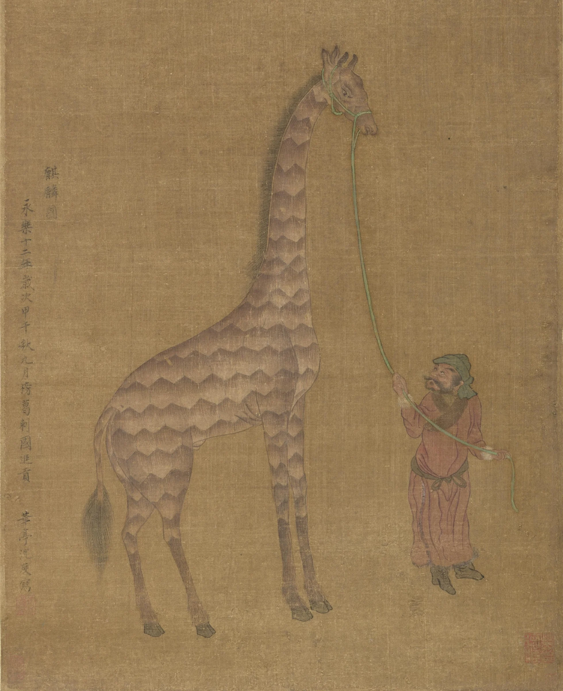
Tribute Giraffe with Attendant, hanging scroll, ink and color on silk. The original was painted by the court artist Shen Du after Bengali envoys presented a giraffe in 1414; the Philadelphia Museum of Art considers this version a later, 16th-century work. Philadelphia Museum of Art. Public domain, Wikimedia Commons.
Q4 story · The Ming court · 1400s
Ming Emperors Expected Foreign Rulers to Send Envoys and Gifts
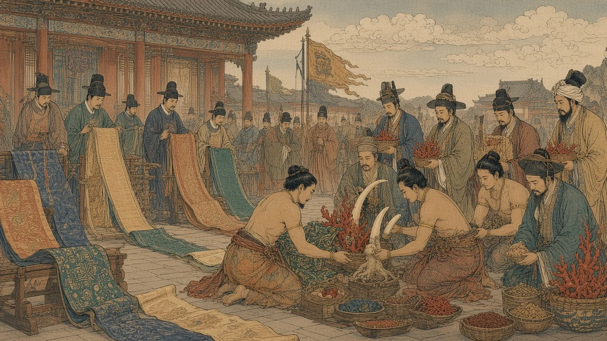
AI-generated illustration in a Ming woodblock-print style, made for this deck: foreign envoys in varied dress kneel with gifts of red coral, ivory tusks and spices in a Ming palace courtyard while officials unroll bolts of patterned silk. An interpretation, not a historical source.
Under the tribute system, foreign rulers sent envoys with gifts to honor the Chinese emperor.
The emperor answered with lavish gifts of his own, so tribute was both diplomacy and trade.
The Ming wanted all foreign trade to pass through this system of envoys.
Chengzu Chose a Muslim Eunuch, Zheng He, to Command a Great Fleet
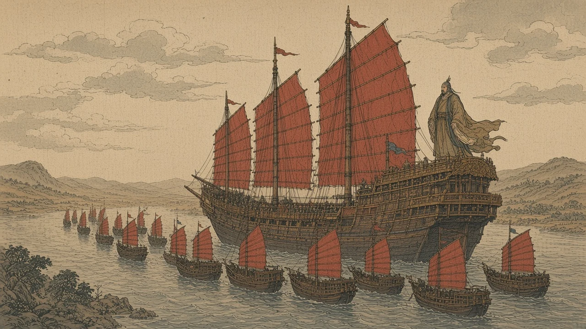
AI-generated illustration in a Ming woodblock-print style, made for this deck: a great treasure ship with red battened sails leads a fleet of smaller junks out of a river mouth, a robed commander standing on its high stern. An interpretation, not a historical source.
Zheng He was a Muslim palace eunuch who had served Chengzu since his days as a prince.
Beginning in 1405, Chengzu sent him to sea with a huge fleet of very large ships and thousands of men.
The fleet's mission was to visit foreign rulers, announce China's peaceful intentions, and hand out lavish gifts.
Seven Voyages Reached Southeast Asia, India, Arabia and East Africa
Between 1405 and 1433 the fleet made seven voyages.
Its ships stopped in Southeast Asia, India, the Persian Gulf and on the coast of East Africa.
From the third voyage on, the fleet offered rulers or their envoys a ride to China.
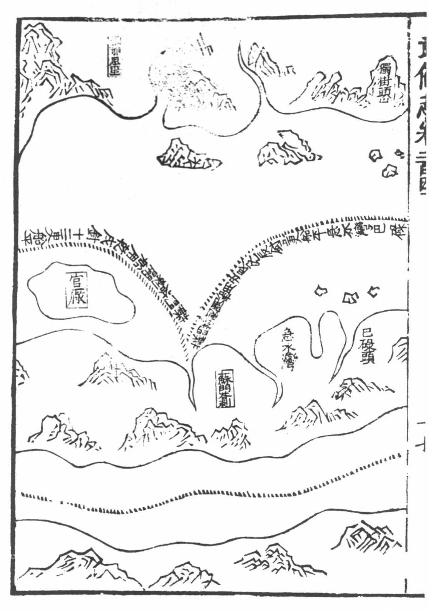
Mao Kun map, section showing the Malay Peninsula and Sumatra, from Mao Yuanyi's Wubei zhi (1621). Public domain, Wikimedia Commons.
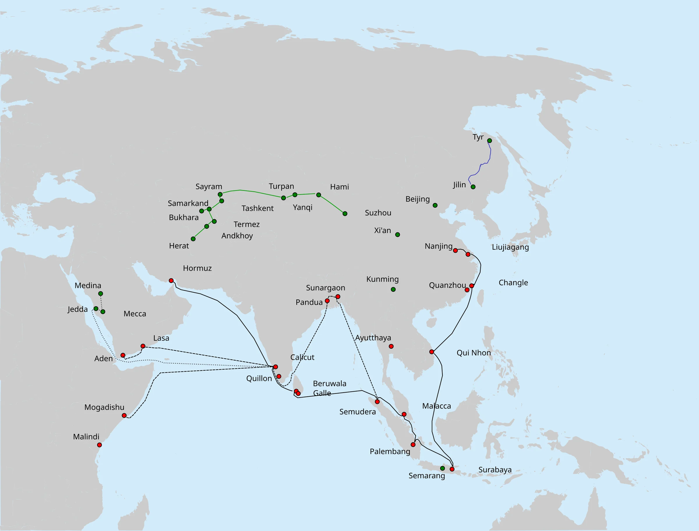
Modern map of Ming expeditions. Black lines trace Zheng He's seventh voyage (1431–1433): the main fleet (solid) to Hormuz and detachments (dashed and dotted) to Bengal, Aden, Mecca's port Jedda and East Africa. Green and blue lines show other Yongle-era missions over land. Map: Vmenkov. CC BY 1.0, Wikimedia Commons.
Zheng He Brought Home Envoys, Giraffes and Spices to Delight the Emperor
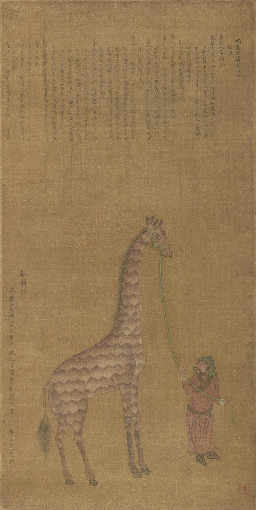
Tribute Giraffe with Attendant, full scroll with its poem. The court painter Shen Du (1357–1434) painted the giraffe presented by envoys from Bengal in 1414; the Philadelphia Museum of Art considers this version a later copy, 16th century. Public domain, Wikimedia Commons.
The fleet returned with envoys from foreign courts.
It also brought giraffes and lions from Africa, fine cotton cloth from India, and gems and spices from Southeast Asia.
Such exotic gifts showed the court that distant lands honored the Ming emperor.
Sources: Ebrey, Ch. 14, p. 233; giraffe dates: Mills, p. 155 n. 10 (outside the textbook). Painting: Philadelphia Museum of Art record via Wikimedia Commons.
Q4 story · Calicut · 1413–1433
A Muslim Interpreter, Ma Huan, Wrote Down What the Fleet Saw
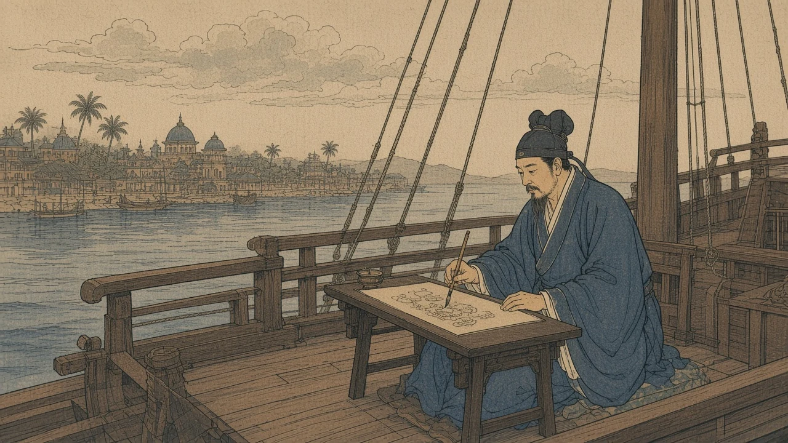
AI-generated illustration in a Ming woodblock-print style, made for this deck: a scholar in a blue robe writes at a small desk on a ship's deck, with a harbor town of domes and palm trees across the water. An interpretation, not a historical source.
Ma Huan, another Muslim, sailed on three of the voyages.
His book described the places they visited: geography, politics, climate, economy, and local customs.
His account is one of the best eyewitness records of the voyages.
[This is] the great country of the Western Ocean.Ma Huan on Calicut, Yingya shenglan, tr. J. V. G. Mills (1970), p. 137 (outside the textbook)
Sources: Ebrey, Ch. 14, p. 233; Ma Huan, Ying-yai sheng-lan, tr. J. V. G. Mills (1970), pp. 34–35, 137–138 (outside the textbook).
Q4 story · Beijing · 1424
Officials Said the Voyages Cost Too Much and Brought Little Back
The voyages did not bring the court much of a material return.
Officials complained that the expeditions were wasteful.
After Chengzu died in 1424, the next emperors cared more about the rising Mongol threat.
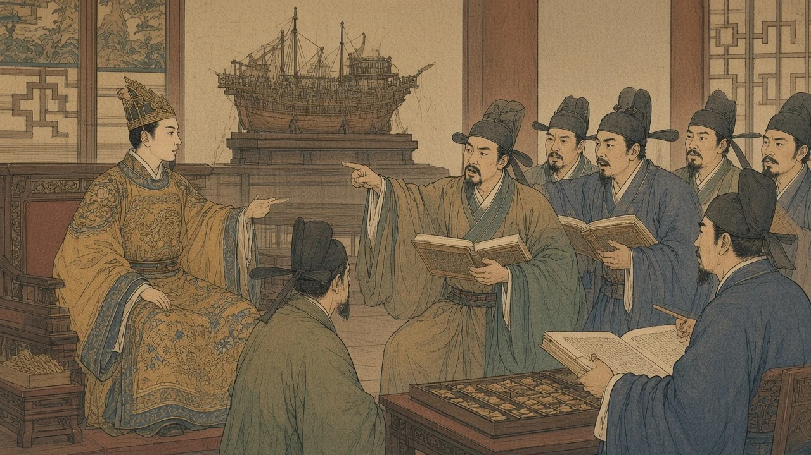
AI-generated illustration in a Ming woodblock-print style, made for this deck: officials holding open ledgers argue before a young emperor, with a tray of counters on the table and a model of a treasure ship on a shelf behind them. An interpretation, not a historical source.
Sources: Ebrey, Ch. 14, p. 233.
Q4 story · Nanjing · 1433–1474
Zheng He Died on the Last Voyage, and the Great Ships Were Broken Up
Zheng He made one final voyage in 1430–1433 and died during it.
Afterward the ships sat in harbor.
In 1474 all the remaining ships with three or more masts were broken up and used for lumber.
AI-generated illustration in a Ming woodblock-print style, made for this deck: workers saw apart a large rotting hull on a muddy shore, with planks piled around them and old ships lying in the shallows. An interpretation, not a historical source.
Sources: Ebrey, Ch. 14, p. 233. Place of death: Britannica, "Zheng He" (outside the textbook).
Reading Guide · Review Question 4
Reading Guide · Review Question 4
Review Question 4
What were the goals of Zheng He's maritime expeditions, and what economic and political factors ultimately led the Ming government to abandon these voyages?
A strong answer has two halves: first the goals, then the reasons for stopping. Sort the reasons into economic and political, and keep the textbook's "likely" and "possibly" in your wording.
Taizu and Chengzu Marched Huge Armies into Mongolia
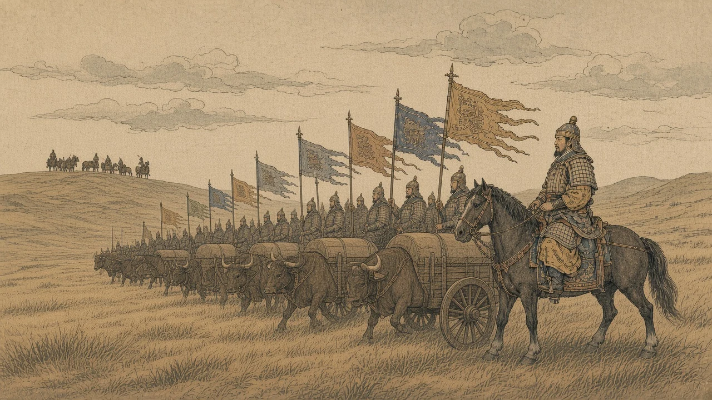
AI-generated illustration in a Ming woodblock-print style, made for this deck: a long Ming column of armored riders, banners and ox-drawn carts crosses open grassland while distant riders watch from a ridge. An interpretation, not a historical source.
Both emperors feared the Mongols could build another war machine like Chinggis Khan's.
They were determined not to pay off their northern neighbors, as the Song had done.
They sent armies of up to 250,000 men into Mongolia, and Chengzu died on his fifth campaign in 1424.
Sources: Ebrey, Ch. 14, p. 233.
Q5 story · The steppe · 1400s
The Campaigns Cost Enormous Sums and Won Little
Mongol horsemen could simply ride away from slow Ming armies.
After losing China, the Mongols split into rival groups and never formed a united federation.
Later Ming rulers stopped invading Mongolia and concentrated on defending the border.
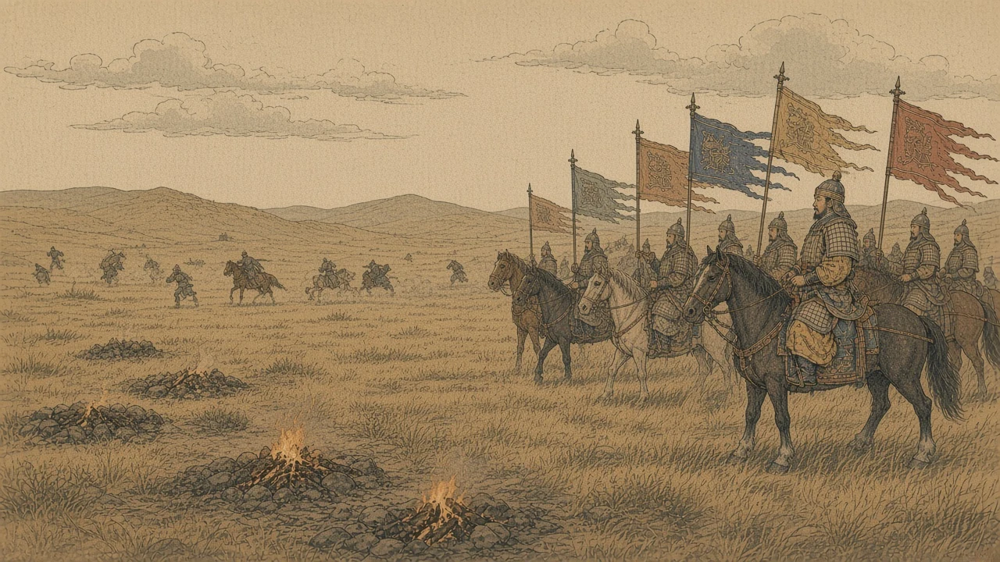
AI-generated illustration in a Ming woodblock-print style, made for this deck: ming cavalry under banners reach an empty steppe campsite with smoldering fire pits while riders scatter across the hills beyond. An interpretation, not a historical source.
Sources: Ebrey, Ch. 14, p. 233.
Q5 story · Northwest of Beijing · 1449
In 1449 a Mongol Khan Captured the Ming Emperor in the Field
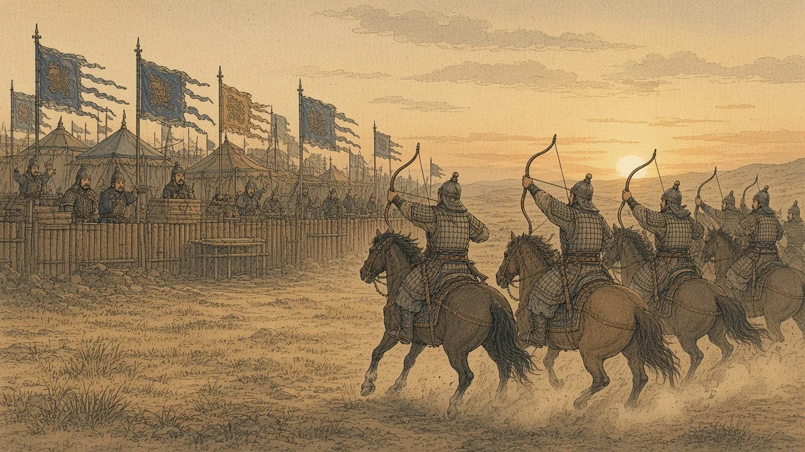
AI-generated illustration in a Ming woodblock-print style, made for this deck: mounted archers with drawn bows gallop past a palisaded army camp at sunrise, banners flying above its fence. An interpretation, not a historical source.
Esen, khan of the Western Mongols, led a raid that the young emperor Yingzong marched out to meet.
The Ming army was destroyed and the emperor was taken prisoner.
The Mongols Asked for Trade, and the Court Kept Saying No
Mongol envoys said raids would ease if they could trade regularly at border markets.
The court insisted that Mongol groups trade only through tribute envoys.
In 1550 Altan Khan's forces surrounded Beijing, and the court finally agreed to trade with him in 1570.
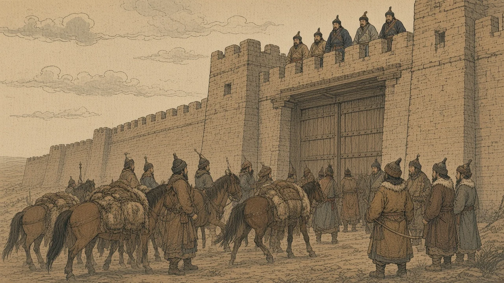
AI-generated illustration in a Ming woodblock-print style, made for this deck: traders in fur-trimmed coats wait with loaded horses outside a closed fortress gate while soldiers look down from the battlements. An interpretation, not a historical source.
Sources: Ebrey, Ch. 14, p. 233.
Q5 story · The western border · mid-1400s
Building Walls Settled the Court's Argument over the Mongols
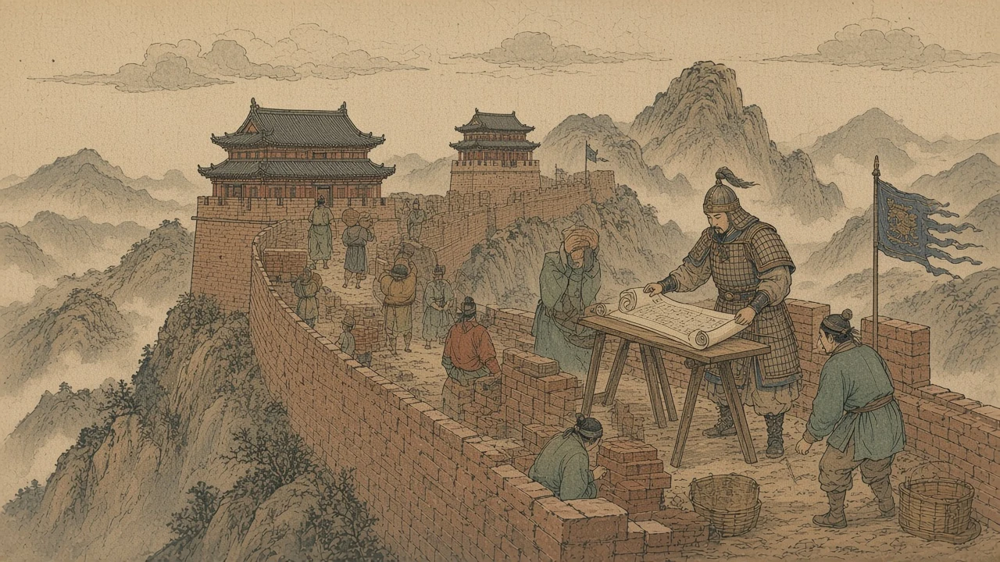
AI-generated illustration in a Ming woodblock-print style, made for this deck: laborers lay bricks along a mountain-ridge wall while an armored commander studies a plan spread on a table, gate towers behind them. An interpretation, not a historical source.
Some officials wanted to allow more trade with the Mongols, while others refused any concession.
By the mid-1400s, border commanders began linking forts with walls and trapped some Mongol raiders.
Extending the wall became the answer that ended the deadlock.
Sources: Ebrey, Ch. 14, p. 233.
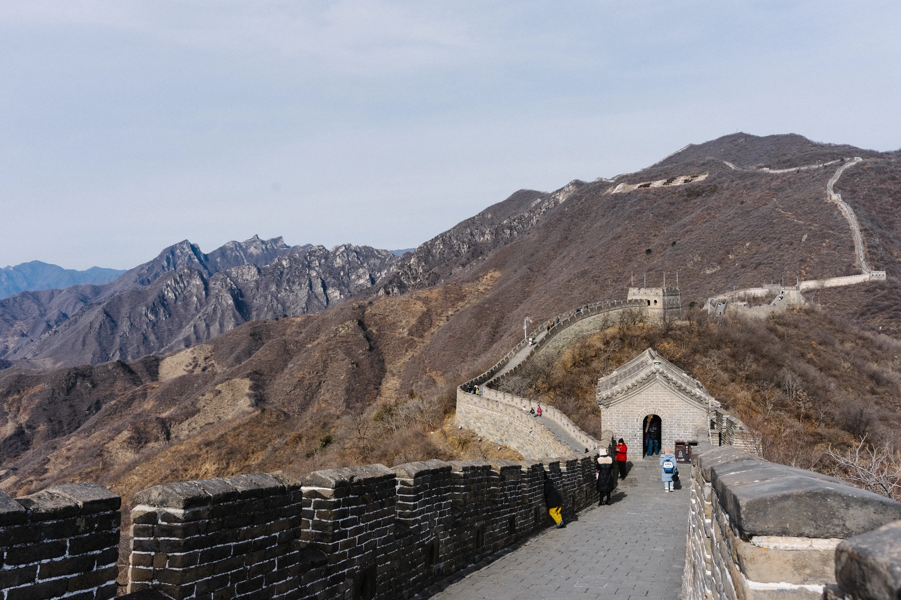
Q5 story · North of Beijing · 1500s
The Ming Wall Is the Great Wall Visitors See Today
The Ming wall runs about 1,500 miles, from northeast of Beijing into Gansu province.
Along its eastern 500 miles, it averages about 35 feet high, with lookout towers every half mile.
Its brick facing greatly impressed the first Westerners who saw it.
Sources: Ebrey, Ch. 14, p. 233.
The Great Wall at Mutianyu, north of Beijing. Photo: Lloyd Tudor. CC BY-SA 4.0, Wikimedia Commons.
Reading Guide · Review Question 5
Reading Guide · Review Question 5
Review Question 5
How did Ming policies toward the Mongols evolve from the early offensive campaigns of Taizu and Chengzu to the later defensive strategies that produced the Great Wall?
The Court Allowed Foreign Trade Only Through Assigned Ports and Missions
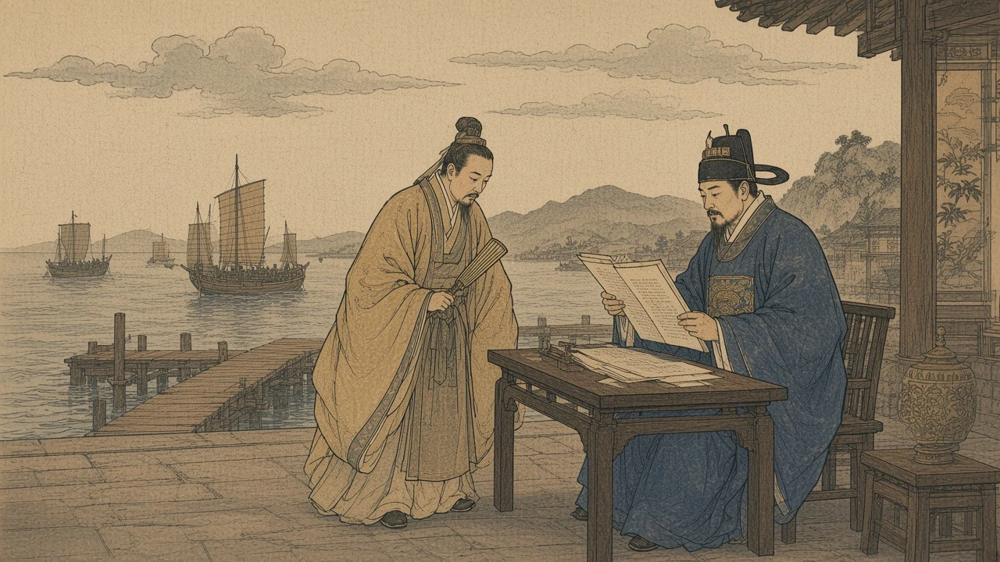
AI-generated illustration in a Ming woodblock-print style, made for this deck: an official at a harbor-side table reads a document while a robed envoy stands waiting, ships at anchor beyond the pier. An interpretation, not a historical source.
The court wanted trade to stay under the control of diplomacy.
Envoys from each country had to use one assigned port, such as Ningbo for Japan and Guangzhou for Indonesia.
Japan could send an embassy only once every ten years, with no more than two ships and 300 men.
Sources: Ebrey, Ch. 14, p. 234.
Q6 story · The China seas · 1500s
Merchants from Many Lands Traded Anyway, Openly and in Secret
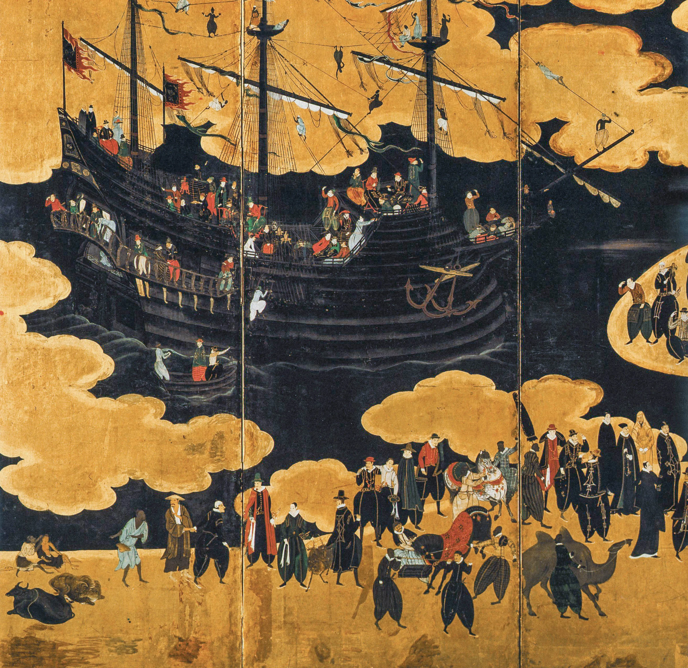
Nanban screen (detail of the left three panels) showing a Portuguese ship arriving to trade in Japan, attributed to Kano Naizen (1570–1616). Museu Nacional de Arte Antiga, Lisbon. Public domain, Wikimedia Commons.
In the 1500s Japanese, Portuguese, Spanish, Dutch and Chinese traders formed an East Asian sea-trading community.
Profits from sea trade were so high that legal and illegal trade went on all along the coast.
The formal tribute rules could not contain this trade.
Pirates Raided the Coast, and the Ming Moved People Inland
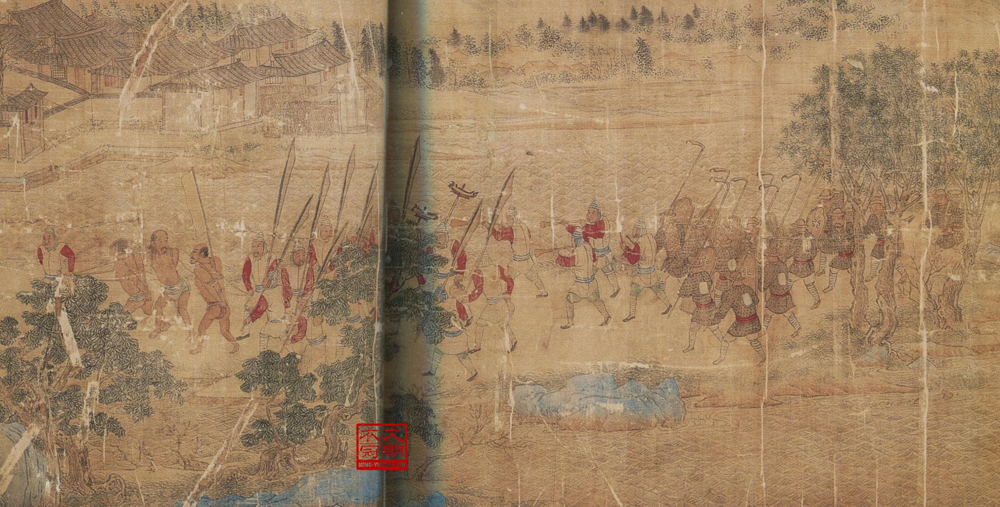
Detail of the Kangwo tujuan (Scroll of Resisting the Japanese Pirates), Ming dynasty, ink and color on silk, showing Ming troops fighting raiders on the coast. National Museum of China. Public domain, Wikimedia Commons.
Ships loaded with valuable goods attracted pirates.
Pirates grew strong enough to raid the coast from Shandong to Guangzhou.
Instead of building a navy, the government forced coastal people to move inland, hoping to starve the pirates out.
Sources: Ebrey, Ch. 14, p. 234; on wokou: Britannica, "Wakō" (outside the textbook).
Q6 story · Manila and the Pacific · late 1500s
Silver from American Mines Crossed the Pacific to Pay for Chinese Silk and Porcelain
Ships leaving China carried silk and porcelain.
Spanish ships brought silver mined in Peru and Mexico across the Pacific to Manila in the Philippines.
Chinese merchants exchanged their goods for that silver and carried it home.
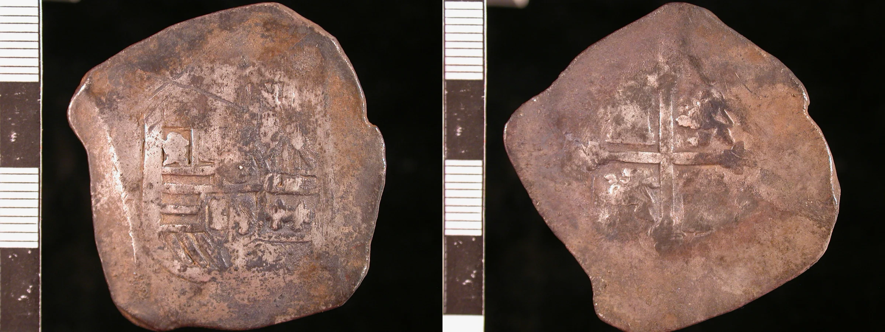
Silver 8 reales of Philip II of Spain (1556–1598), probably Mexico mint, front and back. Found in Cornwall. Photo: Royal Institution of Cornwall / Portable Antiquities Scheme. CC BY-SA 2.0, Wikimedia Commons.
Sources: Ebrey, Ch. 14, p. 234. Coin: Portable Antiquities Scheme record via Wikimedia Commons.
Q6 story · Macao · 1557
The Court Eased Its Restrictions, and Portugal Settled Macao in 1557
Efforts against the pirates had little success until the court eased its trade restrictions in the late 1500s.
Under the new policies, Portugal was allowed to set up a trading base at Macao in 1557.
Portugal held Macao until 1999.
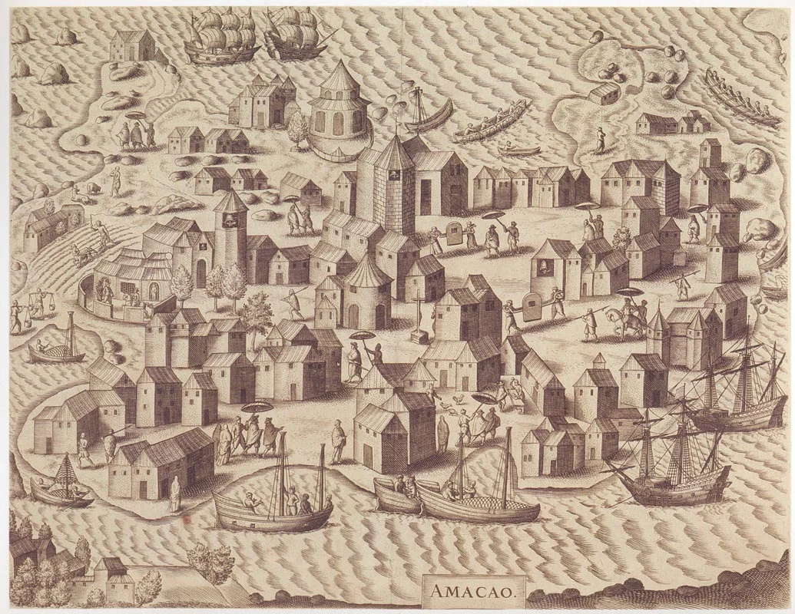
View of Macao (Amacao) in the late 1500s, engraving by Theodor de Bry, showing Europeans in the streets and Western ships in the inner harbor. Public domain, Wikimedia Commons.
Sources: Ebrey, Ch. 14, p. 234. Engraving: Wikimedia Commons record.
Q6 story · Hills and river valleys · late 1500s
Ships Also Brought American Crops That Fed a Growing Population
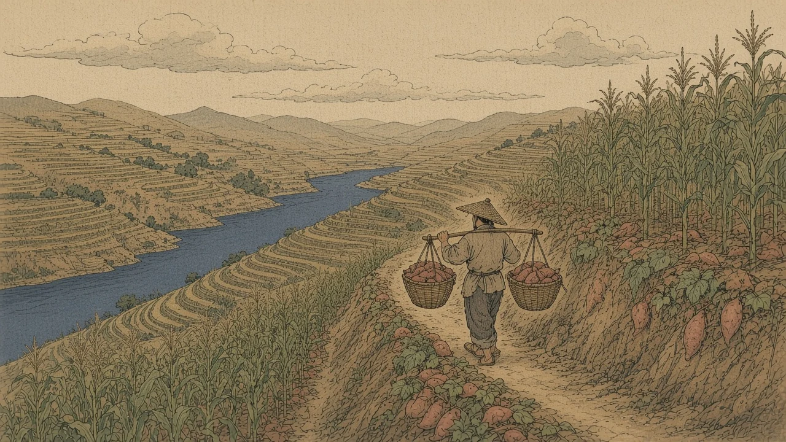
AI-generated illustration in a Ming woodblock-print style, made for this deck: a farmer carries baskets of sweet potatoes on a shoulder pole along a path between maize and sweet-potato plots, terraced hills and a river below. An interpretation, not a historical source.
Sweet potatoes, maize, peanuts, tomatoes, chili peppers and tobacco quickly spread in China.
Sweet potatoes and maize could grow on sandy or steep land that had never been farmed.
Spanish and Portuguese ships also brought Christian missionaries with very different ideas about the world.
Sources: Ebrey, Ch. 14, p. 234.
Reading Guide · Review Question 6
Reading Guide · Review Question 6
Review Question 6
How did the Ming Dynasty's restrictive maritime trade policies inadvertently fuel coastal piracy, and how did China eventually integrate into the new global trading networks?
A strong answer is precise about cause: the textbook says the formal rules could not contain trade and that trade drew pirates. Then show the steps by which China joined the global network.
Silver and New Crops Fed a Growing Society, and a Ladder to Office
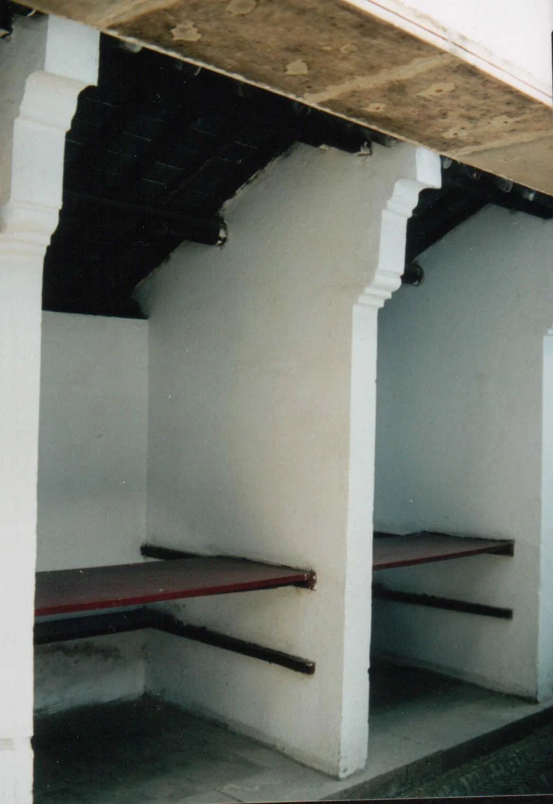
Examination cells at the Jiangnan examination hall (Jiangnan Gongyuan), Nanjing, as preserved today. Photo: Dr. Meierhofer, 2001. CC BY-SA 3.0, Wikimedia Commons.
More people and more silver changed life in villages and towns.
The next lecture follows one man through the examinations that led to office.
It ends in the villages, where his ideas took root.
Sources: Ebrey, Ch. 14, pp. 235–240.
Beyond the lecture
Pierian Spring
Optional Independent Study
Three short side trips for curious readers. Nothing here is needed for the Reading Guide or the review questions.
"A little learning is a dang'rous thing; Drink deep, or taste not the Pierian spring."Alexander Pope, An Essay on Criticism, 1711
Pierian Spring · Tibet and Mongolia · 1577
PS: In 1577 Altan Khan Made Tibetan Buddhism the Mongols' Religion
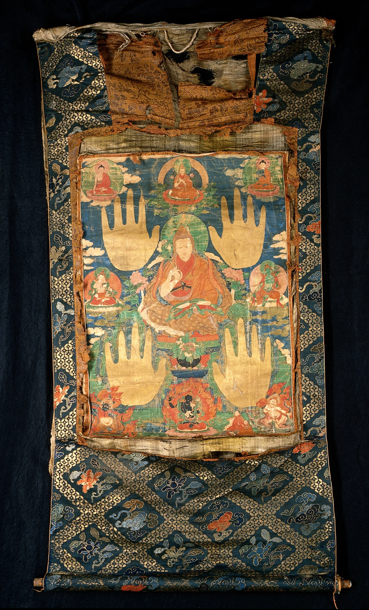
The third Dalai Lama, Sonam Gyatso (1543–1588), and his entourage. Gouache painting, date unknown. Wellcome Collection. CC BY 4.0, Wikimedia Commons.
Tsong-kha-pa founded the Gelug-pa (Yellow Hat) order, whose heads became the Dalai Lamas.
In 1577 the third Dalai Lama visited Altan Khan, who declared Tibetan Buddhism the religion of all Mongols.
The Dalai Lama called the khan "King of Religion," and the next Dalai Lama was found to be Altan's great-grandson.
Sources: Ebrey, Ch. 14, pp. 233–234.
Pierian Spring · The world's oceans · 1474–1498
PS: Soon After the Fleet Was Scrapped, da Gama and Columbus Sailed
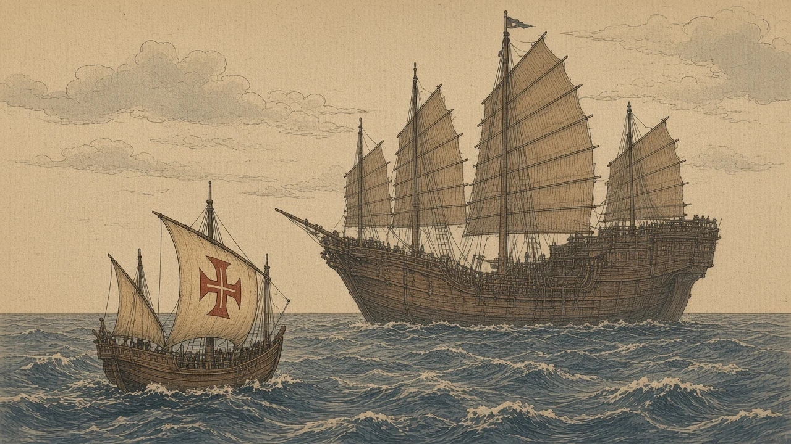
AI-generated illustration in a Ming woodblock-print style, made for this deck: a small caravel with a red-cross sail sails beside a far larger, many-masted Chinese junk on the open sea. An interpretation, not a historical source.
The Ming broke up its great ships in 1474.
Within a few decades, much smaller European expeditions changed world history.
The textbook's "Connections: Europe Enters the Scene" tells that story.
Sources: Ebrey, Ch. 14, p. 233. The "Connections" essay is not in our copy of the textbook.
Pierian Spring · Jinshanling · 1500s
PS: The Wall Was Built in Brick, Tower by Tower
Much of the Ming wall survives today.
Brick facing made it look imposing.
Towers every half mile served as lookouts.
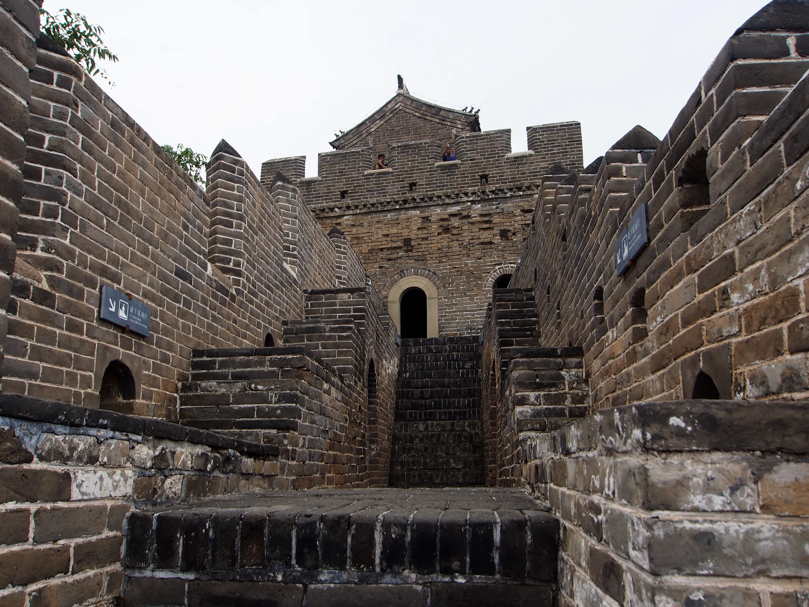
The General Tower (Jiangjun Lou) on the Great Wall at Jinshanling. Photo: rheins, 2015. CC BY 3.0, Wikimedia Commons.
Sources: Ebrey, Ch. 14, p. 233.
Sources and image credits
The Stories in This Deck Rest on These Sources
Textbook
Patricia Buckley Ebrey et al., course textbook, Chapter 14, "The Ming Empire in China (1368–1644)," pp. 230, 233–235. Pages 231–232 are missing from our copy.
Outside the textbook (Zheng He and other flagged details)
Ma Huan, Ying-yai sheng-lan: "The Overall Survey of the Ocean's Shores" [1433], tr. J. V. G. Mills (Hakluyt Society / Cambridge University Press, 1970), pp. 34–35, 137–138, 155, and appendix 2 (the Mao Kun map).
Johan Elverskog, "Sagang Sechen on the Tumu Incident," The Silk Road 15 (2017): 142–152.
Further reading (not used for specific claims here): Edward L. Dreyer, Zheng He: China and the Oceans in the Early Ming Dynasty, 1405–1433 (Pearson Longman, 2007).
Images (real)
Slides a, e: Tribute Giraffe with Attendant, after Shen Du, Philadelphia Museum of Art. Public domain, Wikimedia Commons.
Slide d: Ming expeditions map, Vmenkov, CC BY 1.0; Mao Kun map section from the Wubei zhi (1621), public domain. Wikimedia Commons.
Slide o: Great Wall at Mutianyu. Photo: Lloyd Tudor. CC BY-SA 4.0, Wikimedia Commons.
Slide r: Nanban screen attributed to Kano Naizen, Museu Nacional de Arte Antiga, Lisbon. Public domain, Wikimedia Commons.
Slide s: Kangwo tujuan (detail), National Museum of China. Public domain, Wikimedia Commons.
Slide t: 8 reales of Philip II, Royal Institution of Cornwall / Portable Antiquities Scheme. CC BY-SA 2.0, Wikimedia Commons. Route diagram made for this deck.
Slide u: Theodor de Bry, view of Macao. Public domain, Wikimedia Commons.
Slide x: Examination cells, Jiangnan Gongyuan, Nanjing. Photo: Dr. Meierhofer. CC BY-SA 3.0, Wikimedia Commons.
Slide z: The third Dalai Lama and his entourage, Wellcome Collection. CC BY 4.0, Wikimedia Commons.
Slide bb: General Tower, Jinshanling. Photo: rheins. CC BY 3.0, Wikimedia Commons.
Images (AI-generated)
Scene illustrations on slides b, c, f, g, h, j, k, l, m, n, q, v and aa are AI-generated interpretations made for this deck. They are not historical sources.
×
Tribute system
In the tribute system, foreign rulers sent envoys with gifts ("tribute") to the Chinese emperor and acknowledged his superior status. The emperor received them with ceremony and sent them home with gifts of his own.
Chengzu expanded and regularized the court's system for receiving envoys (Ebrey, p. 230).
×
Eunuch
A eunuch was a castrated man who served in the imperial palace. Because eunuchs could have no sons of their own, emperors often trusted them as personal servants and agents (see Lecture 1, slide aa, eunuchs).
×
Federation
A federation here means many separate Mongol groups united under one leader, as they had been under Chinggis Khan. In Ming times the Mongols were loosely divided into about six groups (Ebrey, p. 233).